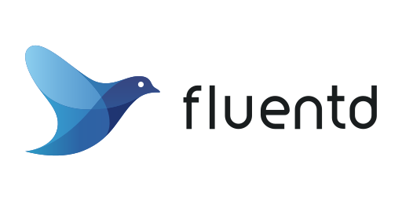
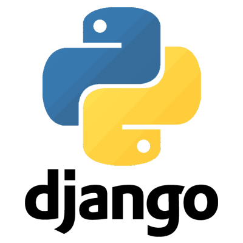
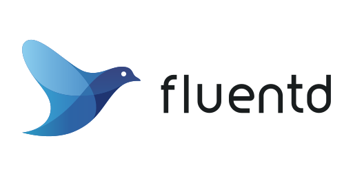
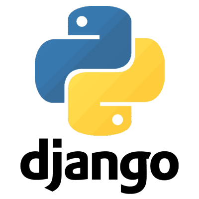

Project Overview
The Cloud Observability Platform is designed to provide seamless real-time log monitoring for applications running on a Kubernetes cluster. By leveraging FluentD for log collection, the platform captures and visualizes logs, providing detailed insights through a custom dashboard.
Key Features
Deployed Multiple Apps on Kubernetes
Multiple applications in the cluster are running, and their logs can be seen in real-time.
Interactive Dashboard
A user-friendly dashboard with dynamic widgets to search, filter, and visualize the collected logs, offering in-depth insights into your applications' performance.
FluentD Log Collection
Efficiently captures logs from the Kubernetes cluster using FluentD, ensuring that all logs are securely transmitted to the backend service for storage and analysis.
Scalable & Extensible Design
The platform can handle multiple sources and log types, making it easy to scale as your cloud environment grows.
Technologies Used
 


